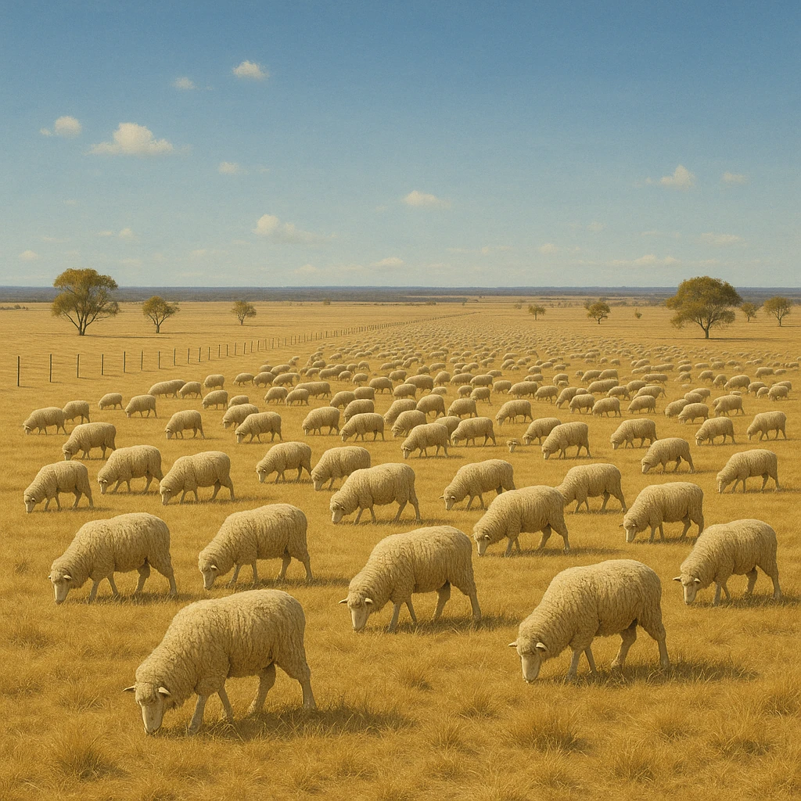
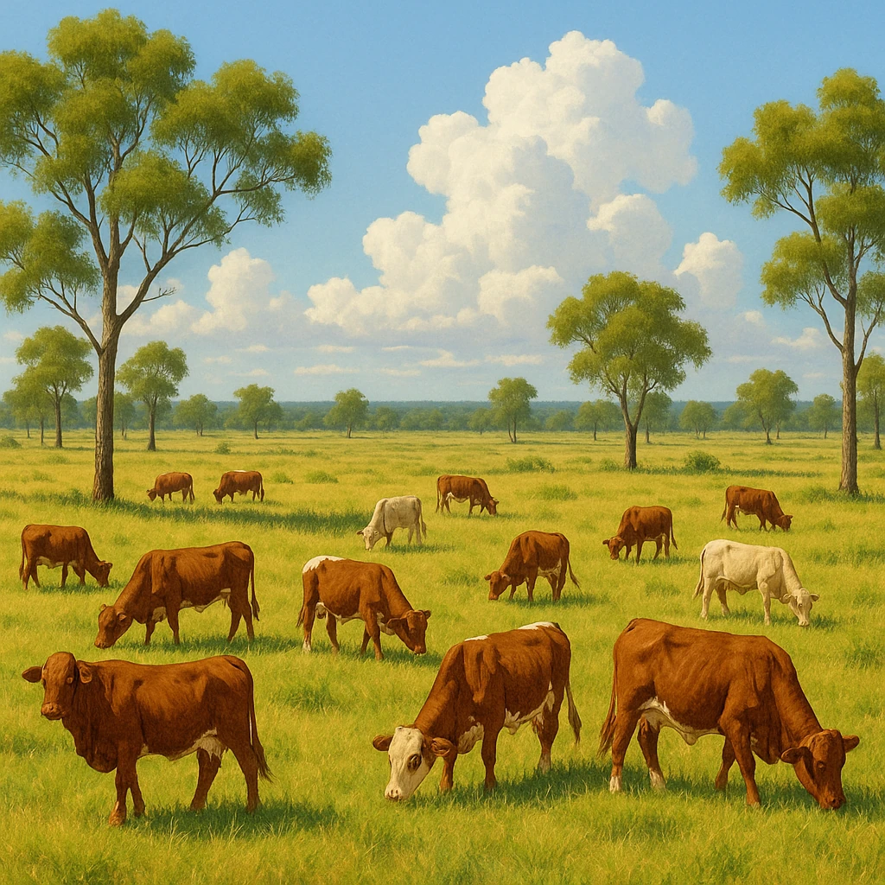
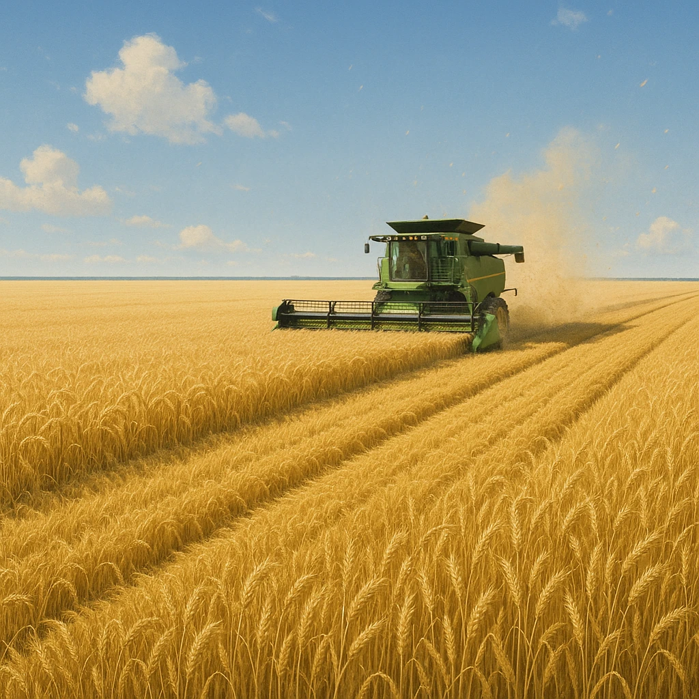

Ⅰ-7
農業
羊・牛・穀物の
三本柱
🐑
羊

世界有数の
羊毛
の生産国
牧羊（羊の放牧）がさかん
内陸の乾燥地帯や南部で飼育
掘り抜き井戸の地下水を利用
🐄
牛

北部の
熱帯
で放牧
食用に飼われる家畜
牛肉（肉類）を日本へ輸出
日本の輸入牛肉の上位
🌾
小麦

南西部・南東部で大規模栽培
雨のある温帯の地域
大型機械で広い畑を耕す
日本へも輸出する
覚え方
かわいた
内陸＝羊
／あつい
北部＝牛
／雨のある
南＝麦
。気候と農業がセットになっている。
第9章 オセアニア州
SEED EDUCATION